An Information Technology student at Institut Teknologi Sepuluh Nopember (ITS) passionate about
Cloud Computing, Networking, and especially the world of DevOps.
Building reliable systems, one pipeline at a time.
I am an Information Technology undergraduate student at
Institut Teknologi Sepuluh Nopember (ITS), with a strong
interest in Cloud Computing and Networking,
especially in the DevOps domain.
With a foundation in software engineering from vocational high school and
over 3 years of experience in the IT field, I have honed my skills in
web development (HTML, CSS, JavaScript), version control (Git), and
UI/UX design (Figma). I continuously explore infrastructure automation,
containerization, and security operations.
Developed and maintained SQL practicum modules and automated tests using GitHub.
Led lab demonstration exercises and guided students through SQL queries and database concepts.
Served as Person in Charge (PIC) for selected database modules.
Aug 2025 — Mar 2026
UI/UX Expert Staff
Ara (IT Development Division)
Designed interactive UI/UX prototypes and interface states using Figma.
Monitored, guided, and reviewed layouts produced by junior UI/UX design staff.
Collaborated with frontend developers to ensure design system guidelines were implemented correctly.
Jul 2025 — Nov 2026
Public Relations Staff
TDC Summit Fest 2025
Managed promotion and publicity campaigns through social media and community platforms.
Established and maintained key partnerships for promotional material distribution.
Coordinated promotions and publicity events to reach a wider target audience.
May 2025 — Present
Web Development Officer
IEEE ITS Student Branch
Developed responsive websites using Next.js (React) and Tailwind CSS.
Designed and mapped interactive UI/UX features for branch projects.
Collaborated with team members using Git and GitHub branching workflows to maintain source code quality.
Nov 2024 — May 2025
Programming Intern
Virose
Developed custom backend utility modules and software solutions using C++.
Solved complex computational math challenges and optimized search logic using C and C++.
Built and tested an IoT temperature sensor and alarm warning circuit powered by C++.
Oct 2024 — Dec 2024
UI/UX Division Intern
ITS Website Division
Redesigned mockups and flows for the official ITS Photo portal inside Figma.
Built and configured a WordPress site aligning with redesigned layouts.
Created interactive web templates for the ITS Website "Kampus Merdeka Page".
Sep 2024 — Oct 2024
UI/UX Staff
Ara (IT Development Division)
Created comprehensive UI/UX layout designs in Figma.
Built structural interface wireframes and interactive component states.
Jul 2023 — Dec 2023
Front-end Developer Intern
National University in Jakarta
Engineered the initial component framework and codebase for an academic system website.
Coordinated with designers to implement responsive page layouts with clean semantic code.
Coded, customized, and unit-tested interactive forms and user dashboard widgets.
Education
Academic Journey
2024 — Present
Institut Teknologi Sepuluh Nopember (ITS)
Bachelor of Information Technology
2021 — 2024
SMKN 2 Jakarta
Software Engineering
Projects
Featured Work
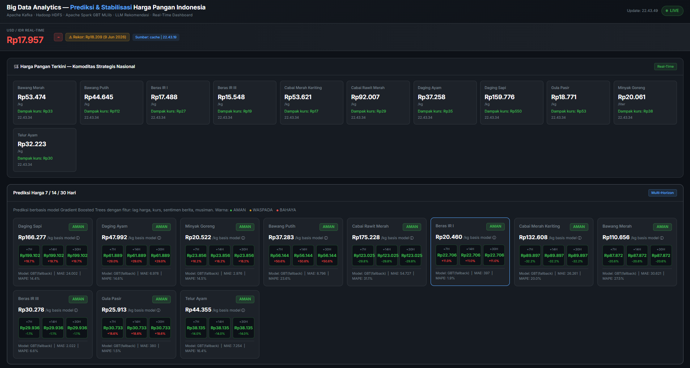
Big Data Analytics — USD/IDR vs Food Prices
A real-time big data pipeline predicting the price of 11 strategic food commodities 7, 14, and 30 days ahead. Features Kafka streaming, HDFS storage, Spark GBTRegressor modeling, and a Flask dashboard with automated LLM recommendations.
A Security Operations Center (SOC) system deployed on Azure VMs. Features custom Wazuh SIEM rule detection for multi-vector DDoS and malware. Integrates a Random Forest Machine Learning AI Filter to reduce false positive alarms by 32.2% alongside automated active response blocking.
Provisioned high-performance web cluster architecture on Google Cloud Platform. Features Nginx reverse proxy load-balancer, daemonized Gunicorn WSGI processes, firewall network segmentation, and performance-tuned MongoDB storage replica sets optimized for high concurrent locust traffic workloads.
A web-based IoT dashboard for monitoring water flow sensor data in real-time. Built with pure HTML, CSS, and JavaScript, featuring live data visualization, flow rate gauges, and water level indicators.
A real-time weather monitoring system leveraging WebSocket protocol for instantaneous telemetry updates. Displays temperature, humidity, and barometric pressure data with instant live-feed charts.
Backend for an educational web-based word game where users can play, learn, and have fun simultaneously. Built with Bun runtime, TypeScript, PostgreSQL with Prisma ORM, and JWT authentication.
A React web app helping students manage and analyze daily activities. Features smart overlap detection for conflicting schedules, burnout prevention warnings (5+ hours non-stop), and interactive activity visualization.
An IoT project using Raspberry Pi 3 with HC-SR04 ultrasonic sensor to measure distances. Involves GPIO pin configuration, Python scripting for real-time distance measurement, and hardware wiring with voltage dividers.
A comprehensive networking lab covering static IP configuration, NAT routing, FTP server setup, Wireshark packet analysis, and Telnet services. Built using GNS3 simulation with multiple routers and client nodes.
A mystical-themed mobile application design focusing on community building and interest-based connections.
Features interest-onboarding pages, custom content feeds, profile customization, and dark purple neon thematic user experiences.
FigmaMobile UI/UXPrototypingWireframing
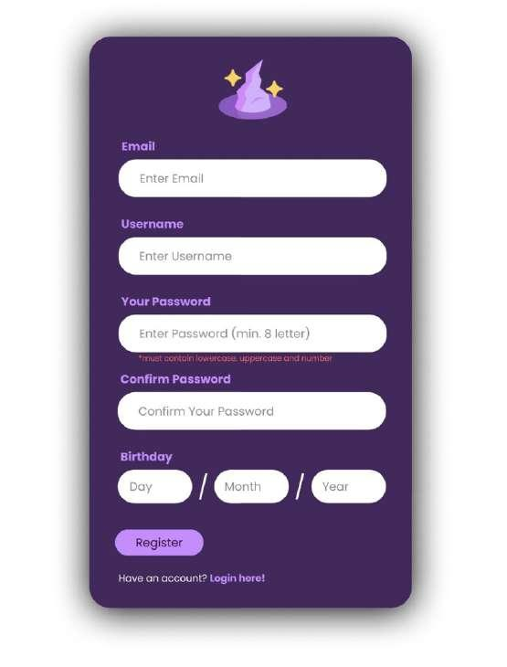
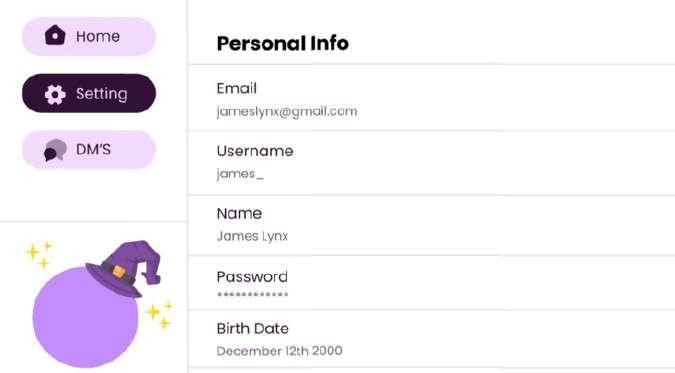
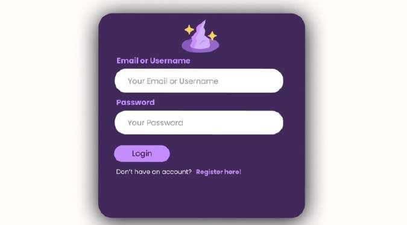
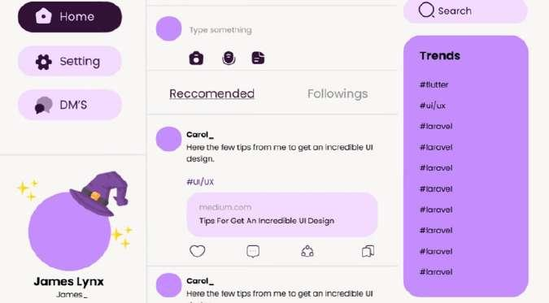
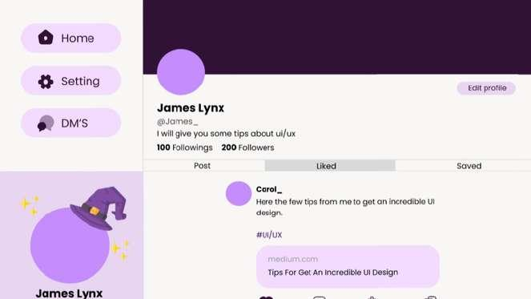
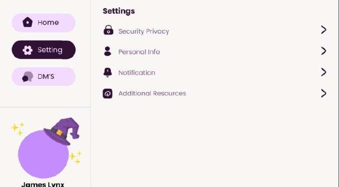
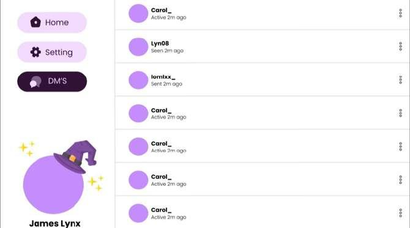
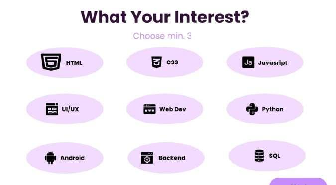
UI/UX Design
ITS Official Website Redesign
A web layout concept reimagining the homepage portals and academic statistics screens for the Institut Teknologi Sepuluh Nopember (ITS).
Features slider hero sections, campus statistic graphs, news sections, and structured info footers matching standard campus branding rules.
FigmaWeb DesignInformation Architecture
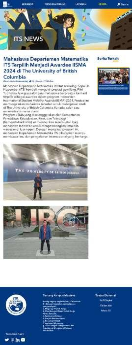
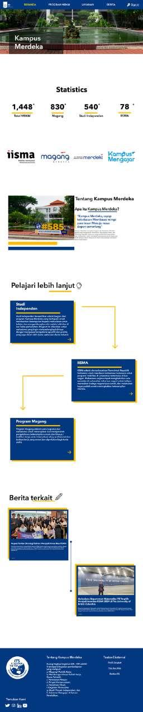
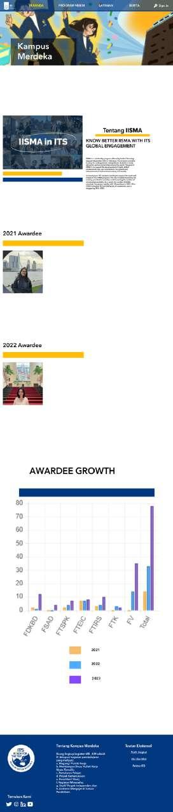
UI/UX Design
ARA 6.0 Event Platform
Web portal design for ARA 6.0, the annual IT and cybersecurity competition event by HMIT ITS. Formulates a sci-fi "Welcome Agents" visual landing page theme, competition track detail slides, dashboard registration fields, and responsive layout models.
FigmaResponsive DesignDashboard Layouts
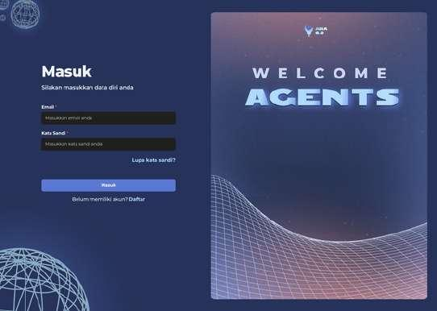
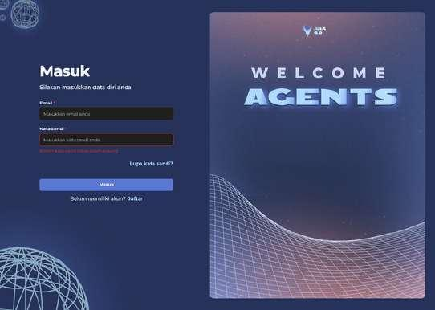
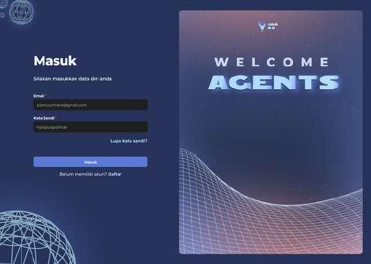
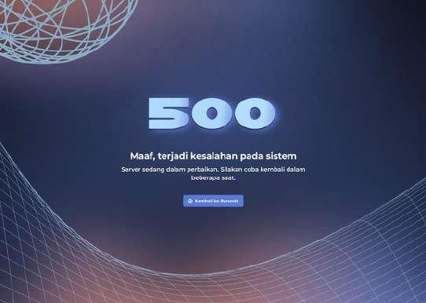
UI/UX Design
ARA 7.0 Gamified Platform
An arcade-themed registration and tracking dashboard for the ARA 7.0 event. Emphasizes gamified navigation components, retro arcade console interfaces, data science track layout portals, and countdown timers.
FigmaGamified UIRetro Aesthetic
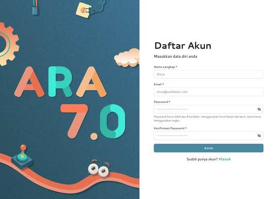
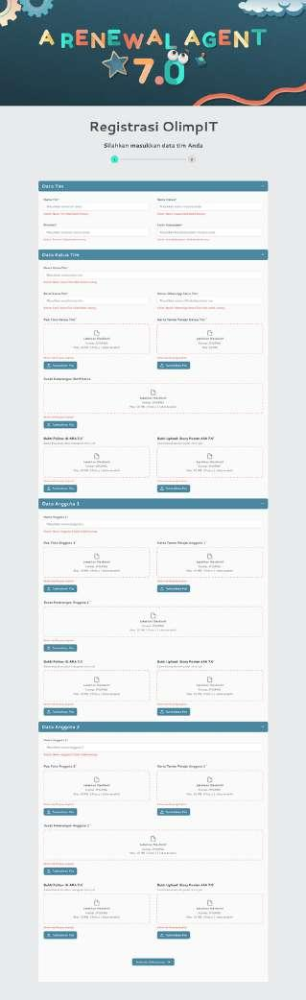
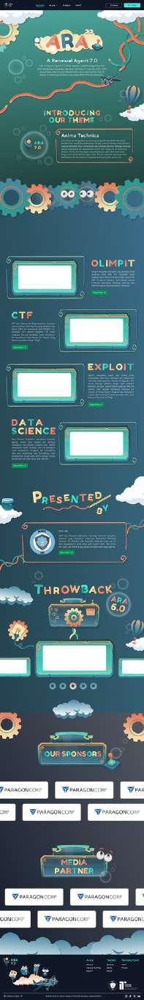
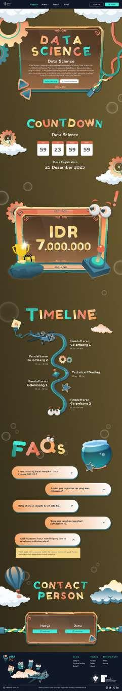
Contact & CV
Get In Touch
Contact Info
Feel free to reach out for collaborations, job opportunities, or database questions!